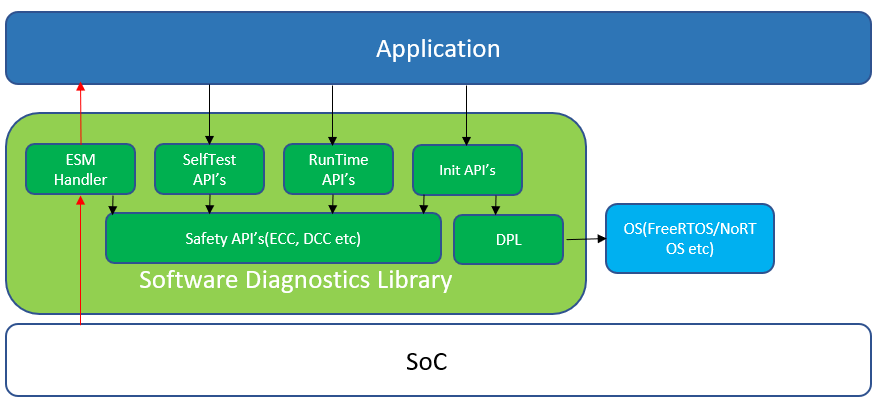

|
AM62Px MCU+ SDK
12.00.00
|
|
|
AM62Px MCU+ SDK
12.00.00
|
|
The AM62PX family of SoCs provides various safety mechanisms and features, as well as recommendations for usage of these safety mechanisms and features. The Software Diagnostic Library (SDL) provides interfaces to these safety mechanisms and features. SDL provides these interfaces to assist in the development of software applications involving Functional Safety.
In an application involving functional safety, the detection of random hardware faults and ability to take the appropriate response to get the system to a safe state is of utmost importance. Methods to detect and respond to faults in a system are called functional safety mechanisms or safety functions. Examples of safety mechanisms available on an SoC include error correction/detection (ECC) on memory regions, Error Signaling Module (ESM) to monitor error events, etc.
The safety-critical processor product family provides various hardware functional safety mechanisms. For example, this software release provides an API to configure ECC and a reference example to set up interrupts to check on ECC error events detected by hardware. Overall, the system integrator can use this API and implement software diagnostics to meet the safety system goals.
The user of this document should have a general familiarity with the safety-critical processor family.
The Software Diagnostics Library consists of different blocks for Error Capture and Safety Mechanisms. Error response is managed by the Application based on the device Safety Manual requirements. The interface for the Application is in the form of software APIs. The following diagram shows the high-level blocks of the SDL as well as the overall system. The application may use either no OS or an OS. In the diagram an OS is shown as an example only. This is an overview and does not list all the IPs supported as part of the SDL.
In the following diagram, the green blocks represent the scope of the SDL. The dark blue is the application, and the light blue represents external modules used by the application along with SDL.

The Software Diagnostics Library provides the functionality for implementing hardware safety mechanisms that can be run during the various operation modes of the device. The functions of the SDL which are used by the application during the various modes are as follows:
SDL consists of below sub-modules
The SDL Compliance Support Package (CSP) was developed to provide the necessary documentation and reports to assist customers using SDL to comply with functional safety standards. The CSP provides software architecture and design documents for the SDL along with software quality reports like detailed static and dynamic analysis reports. It also provides traceability report and test reports that correlate the requirements and results from formal tests used to test the safety feature. The CSP can be requested through MySecureSW from the below link:
The full list of collateral included in CSP packages is provided below:
Other official documentation for your device, such as User Guide, Errata, TÜV SÜD SDL certification (for applicable devices) etc. may be found at https://www.ti.com/product/$DEVICE_NAME.
For example, AM62A7 SDL TUV certificate can be found at https://www.ti.com/product/AM62A7 and then searching for "TUV SUD" in the Technical documentation section.
 1.8.20
1.8.20